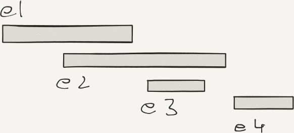
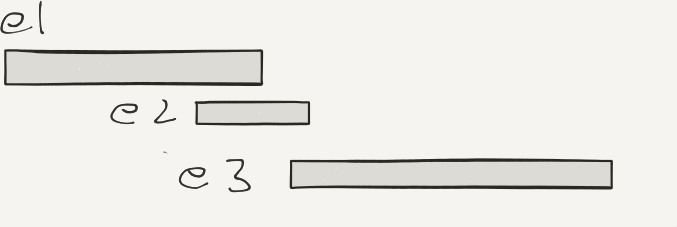
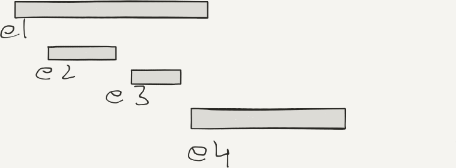

class: center, title-slide <br><br> ## CSCI-UA 480: APS ## Algorithmic Problem Solving <br/><br/><br/><br/><br/><br/><br/> ## Sorting and Searching .author[ Instructor: Joanna Klukowska <br> ] .license[ Copyright 2020 Joanna Klukowska. Unless noted otherwise all content is released under a <br> [Creative Commons Attribution-ShareAlike 4.0 International License](https://creativecommons.org/licenses/by-sa/4.0/).<br> Background image by Stewart Weiss<br>] --- layout:true template: default name: section class: inverse, middle, center --- layout:true template: default name: challenge class: challenge --- layout:true template: default name: poll class: inverse, full-height, center, middle --- layout:true template: default name: breakout class: breakout --- layout:true template:default name:slide class: slide .bottom-left[© Joanna Klukowska. CC-BY-SA.] --- template: section # Sorting --- ## Sorting Algorithms - swap based sorts - swapping consecutive elements, $O(N^2)$, - bubble sort - insertion sort - selection sort - swapping non-consecutive elements, $O(N \log N)$ - merge sort - quick sort - heap sort - _Note_: It is not possible to sort $N$ elements using comparisons in time better than $O(N\log N)$ --- ## Sorting Algorithms: Counting Sort - assumes that elements to be sorted are in a fixed range of 0 to $c$ - works in $O(N + c)$ - which is $O(N)$ for $c < N$, - but may be much worse if $c > N$ (for example, if $c=N^2$, then using counting sort gives $O(N^2)$ time) - algorithm: - linear pass through the data to count how many of each elements 0 to $c$ there are (counter for each possible element) - linear pass through the counters to produce data in order --- ## Sorting Algorithms: Counting Sort __Example__ Data to sort: A = [1, 3, 6, 9, 9, 3, 5, 9], the max possible value is `c = 9` -- - create an array C with indexes 0 to 9, initialize all values to zero - for each element i in A - increment C[A[i]] by one ``` index | 0 | 1 | 2 | 3 | 4 | 5 | 6 | 7 | 8 | 9 | value | 0 | 1 | 0 | 2 | 0 | 1 | 1 | 0 | 0 | 3 | ``` - create and empty array B - for each element i in C - if C[i] > 0, add i to B C[i] times B is the sorted version of A (of course, this could be done _in place_ without using a B array, but we do need to use a C array) --- ## Sorting Algorithms: Radix Sort - another _fast_ sort for integer data (or data that can be easily mapped to integers) - useful when counting sort is too slow, i.e., the range is significantly larger than the number of elements - idea: sort the numbers by digits from least significant to most significant - can be applied to representations in different basis --- ## Sorting Algorithms: Radix Sort __Example__ Data to sort: A = [100182, 21203, 611341, 909090, 9897, 323109, 5, 9781], the range of values is [0, 1000000]. -- <span style="font-family:mono">10018__2__, 2120__3__, 61134__1__, 90909__0__, 989__7__, 32310__9__, __5__, 978__1__ </span><br> -- <span style="font-family:mono">90909__0__, 61134__1__, 978__1__, 10018__2__, 2120__3__, __5__, 989__7__, 32310__9__ </span><br> -- <span style="font-family:mono">9090__9__0, 6113__4__1, 97__8__1, 1001__8__2, 212__0__3, __?__5, 98__9__7, 3231__0__9 </span><br> -- <span style="font-family:mono">__?__5, 212__0__3, 3231__0__9, 6113__4__1, 97__8__1, 1001__8__2, 9090__9__0, 98__9__7</span><br> -- <span style="font-family:mono">5, 21__2__03, 323__1__09, 611__3__41, 9__7__81, 100__1__82, 909__0__90, 9__8__97</span><br> -- <span style="font-family:mono">5, 909__0__90, 323__1__09, 100__1__82, 21__2__03, 611__3__41, 9__7__81, 9__8__97</span><br> -- <span style="font-family:mono">5, 90__9__090, 32__3__109, 10__0__182, 2__1__203, 61__1__341, __9__781, __9__897</span><br> -- <span style="font-family:mono">5, 10__0__182, 2__1__203, 61__1__341, 32__3__109, 90__9__090, __9__781, __9__897</span><br> -- <span style="font-family:mono">5, 1__0__0182, __2__1203, 6__1__1341, 3__2__3109, 9__0__9090, __?__9781, __?__9897</span><br> -- <span style="font-family:mono">5, __?__9781, __?__9897, 1__0__0182, 9__0__9090, 6__1__1341, __2__1203, 3__2__3109</span><br> -- <span style="font-family:mono">5, 9781, 9897, __1__00182, __9__09090, __6__11341, __?__21203, __3__23109</span><br> -- <span style="font-family:mono">5, 9781, 9897, __?__21203, __1__00182, __3__23109, __6__11341, __9__09090</span><br> -- How should each _digit_ be sorted to guarantee the final sorted order? What is the performance of this sort? --- ## Sorting in C++ and Java - both languages provide sorts implemented in the libraries - in both cases the implementations provide $O(N \log N)$ performance - __but__ learn how to implement a comparison operations that can be given to those sorts to decide/alter the sorting order of objects --- template: challenge ## Challenge: Unique or Not __Task:__ <br/> given an array A of N integers (N can be very large), determine if all values are unique (i.e., no value appears twice). -- __Brute force solution__, $O(N^2)$ - for i in 0 .. N-1 - for j in i+1 .. N-1 - if A[i] is equal to A[j] return NOT_UNIQUE - elements are UNIQUE -- __Better, using sorting__, $O(N \log N)$ - sort the array (using $O(N \log N)$ sort, of course) - for i in 1 .. N-1 - if A[i] is equal to A[i-1] return NOT_UNIQUE - elements are UNIQUE --- template: challenge ## Challenge: Restaurant Problem __Task:__ <br/> At the end of the day a restaurant owner tries to determine what time was the most popular during the evening. The restaurant keeps track of exact time of arrival and departure of each party (assume all parties always arrive and leave together). What was the largest number of parties at the restaurant during that evening? The information that you have access to is as follows: | party | arrival time | departure time | | --- | --- | --- | | A | $a_A$ | $d_A$ | | B | $a_B$ | $d_B$ | | C | $a_C$ | $d_C$ | | D | $a_D$ | $d_D$ | | ... | $a_{...}$ | $d_{...}$ | --- template: challenge ## Challenge: Restaurant Problem __Solution__ - sort the times $a_i$ and $d_i$ (as a single array based on time) - start a counter at zero - set max_counter to zero - for each element in the array of arrival/departure times - if it is an arrival, increment the counter - if it is a departure, decrement the counter - if counter > max_counter, set max_counter to counter - max_counter stores the largest number of parties at the restaurant during the evening -- <br><br><br> This is algorithm in the family of __sweep line__ algorithms. --- template: challenge ## Challenge: Springbreak __Task__<br/> - You are planning an eventful springbreak, but your parents insist that you go back home to see them during the break. - As a compromise, you are going back home, but you will do as many _fun things_ as you can during that week. - You have a calendar of fun events that are happening around you. The goal is to attend as many of them as possible, but some of them are overlapping in time. - You are going to write an algorihtm that picks the largest number of events to attend given the start and end time for each event. The information that you have access to is as follows: | event | start time | end time | | --- | --- | --- | | 1 | $s_1$ | $e_1$ | | 2 | $s_2$ | $e_2$ | | ... | ... | ... | | N | $s_N$ | $e_N$ | __Note__: the duration of the events does not matter, you just want as many of them as possible. --- template: challenge ## Challenge: Springbreak __Solution 1__ - sort by length ($e_i - s_i$) - sort the events by lengths - as long as there are more events to pick from - pick shortest one - throw out all events that conflict with it -- __Solution 2__ - sort by start time ($s_i$) - sort the events by their start time - as long as there are more events to pick from - pick a next event (the one that starts as soon as possible) - throw out all the events that conflict with it -- __Solution 3__ - sort by end time ($e_i$) - sort the events by their end time - as long as there are more events to pick from - pick a next event (the one that ends as soon as possible) - throw out all the events that conflict with it -- __Which of these solutions would result in the largest number of events?__ --- template: challenge ## Challenge: Springbreak Consider these scenarios | scenario | sol 1 | sol 2| sol 3| optimal | |:---:|---|---|---|---| |  | 3: e1, e3, e4 | 3: e1, e3, e4 | 3: e1, e3, e4 | 3: e1, e3, e4 | |  | 1: e2 | 2: e1, e3 | 2: e1, e3 | 2: e1, e3 | |  | 3: e2, e3, e4 | 1: e1 | 3: e2, e3, e4 | 3: e2, e3, e4 | --- ## Challenge: Springbreak The solutions #3 is the optimal one. __Justification for optimality__: <br/> consider what happens when we pick an event that ends later than the one we picked - it will either conflict with another event that is in the set of events for solution 3, or not - if it does not conflict, than we have an equivalent optimal solution (i.e., same number of events) - if it does conflict, we have to give up another event, and the new solution has fewer events (not optimal) Picking an event that ends sooner, always gives a better or equivalent solution than picking an event that ends later. -- .center[.huge[ 🤓 ]] So, the _computer scientist in you_ spent the entire spring break analyzing different algorithms and never went to any events at all. --- template: section # Searching --- ## Searching Algorithms - linear search - visits every element, $O(N)$ - no assumptions about the data - binary search - visits small fraction of elements, $O(\log N)$ - data has to be sorted --- template: challenge ## Challenge: Count A's and B's __Taks__<br/> Given an array of `N` elements such that indexes `0..k` are filled with A's and indexes `k+1..N-1` are filled with B's, find the number of A's and B's in that array. <br> _Example:_<br/> - input array `data = [A, A, A, B, B, B, B, B, B, B]` - output: 3 A's and 7 B's --- template: challenge ## Challenge: Count A's and B's <br><br> __Solution__ Perform a modified binary search on `data ` searching for an A that is followed by a B. ``` begin = 0 end = size of the array - 1 while begin <= end mid = (begin+end)/2 if data[mid] == A if data[mid+1] == B <=== look for a B found it so break else search in the first half end = mid-1 else search in the second half begin = mid+1 countA = mid + 1 countB = n - mid - 1 ``` --- template: challenge ## Challenge: Separate A's and B's __Taks__<br/> Given an array of `N` elements each of which is an A or a B, rearrange the array so that it contains a continuous run of all A's followed by all B's. <br> _Example:_<br/> - input array `data = [B, A, A, B, B, B, A, B, B, B]` - output: `data = [A, A, A, B, B, B, B, B, B, B]` --- template: challenge ## Challenge: Separate A's, B's, C's, D's and F's __Taks__<br/> Given an array of `N` elements each of which is an A - F, rearrange the array so that it contains a continuous run of all A's followed by all B's, all C's, ... . <br> _Example:_<br/> - input array `data = [B, F, A, B, C, B, A, C, B, D]` - output: `data = [A, A, B, B, B, B, C, C, D, F]` --- </optgroup>